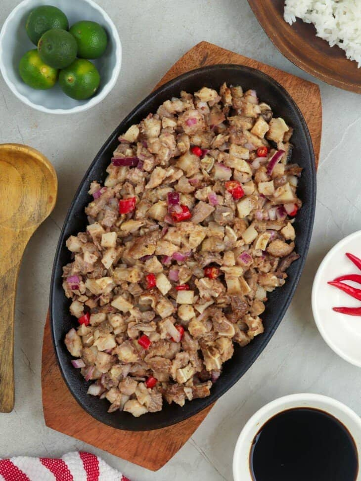

Sisig

Sisig is a delicious appetizer and also a delicious dinner.
Ingredients:
- 1 lb. pig ears
- 1 1/2 lb pork belly
- 1 piece onion minced
- 3 tablespoons soy sauce
- 1/4 teaspoon ground black pepper
- 1 knob ginger minced (optional)
- 3 tablespoons chili flakes
- 1/2 teaspoon garlic powder
- 1 piece lemon or 3 to 5 pieces calamansi
- ½ cup butter or margarine
¼ lb chicken liver
- 6 cups water
- 3 tablespoons mayonnaise
- 1/2 teaspoon salt
- 1 piece egg (optional)
-